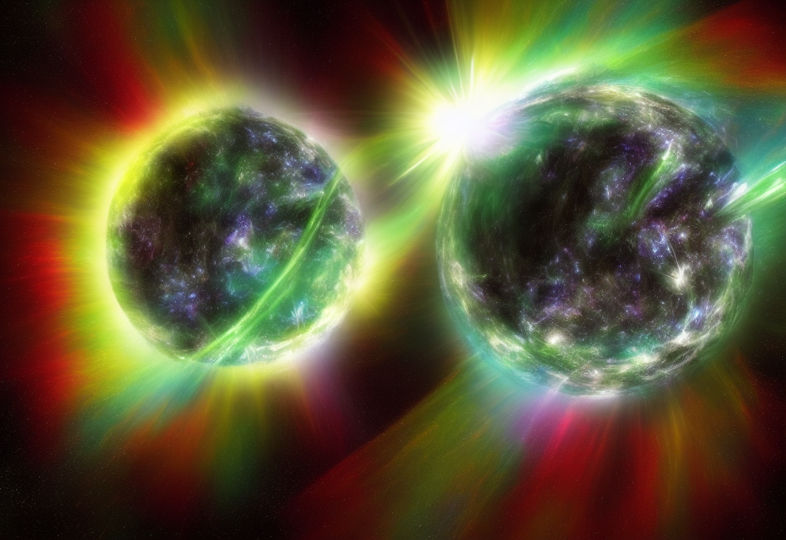

The Magnetosphere.
The magnetosphere is generated by the convective motion of charged, molten iron, far below the surface in Earth's outer core. The solar wind constantly bombards the sun-facing side of our magnetic field, which compressed the magnetosphere. The sun-facing side, or dayside, extends a distance of about six to 10 times the radius of the Earth, while the nightside facing away from the sun stretches out into an immense magnetotail that can fluctuate in length and measure hundreds of Earth radii.
NASA heliophysics studies the magnetosphere to better understand its role in our space environment. Such research helps unravel the fundamental physics of space, which is dominated by complex electromagnetic interactions. By studying this space environment close to home, we can better understand the nature of space throughout the universe. Additionally, space weather within the magnetosphere can sometimes have adverse effects on space technology as well as communications systems. Better understanding of the science of the magnetosphere helps improve our space weather models.
NASA's studies of the magnetosphere include research into: understanding the nature of the electromagnetic phenomena in near-Earth space; how near-Earth space responds to external and internal stimuli; how the coupled middle and upper atmosphere respond to external factors; and how the various regions of the magnetosphere and upper atmosphere interact with each other.

NASA heliophysics missions contributing to magnetospheric research are: Balloon Array for Radiation-belt Relativistic Electron Losses; Geotail; the Magnetospheric Multiscale mission, Time History of Events and Macroscale Interactions during Substorms; Two Wide-Angle Imaging Neutral-Atom Spectrometers; and the Van Allen Probes. Additionally, instruments on other NASA missions -- for example, Juno, which observes Jupiter -- observe the magnetosphere of other planets.